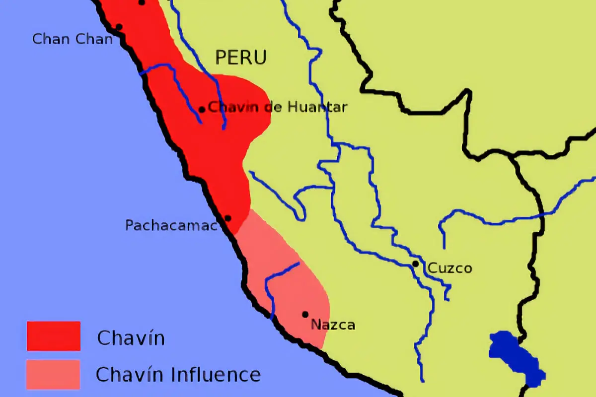

Mapa de la Civilización del Chavín
La civilización Chavín se ubicó estratégicamente en los Andes septentrionales del actual Perú, principalmente en el Callejón de Conchucos, en la confluencia de los ríos Mosna y Huachecsa, lo que hoy corresponde a la provincia de Huari, región Áncash.
